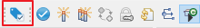
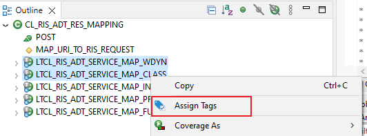

To Tag a Repository Object you have to open the Tag Objects Wizard. It can be opened
from the following places:
the main Eclipse toolbar

Action for starting the Tag Object Wizard
the context menu of a selected Repository Object in the
Project Explorer
the context menu of the current editor of an Repository
object
Tagging of
Components
You can add Tags to object components like local classes/interfaces via
the context menu of the Outline View or from the Object
Outline of the Project Explorer. To view the Tags of
a component you can open it's parent object in the Object
Tags View.

Outline View of global class
Tagging of Components is currently only supported for local
classes/interface of a global class.